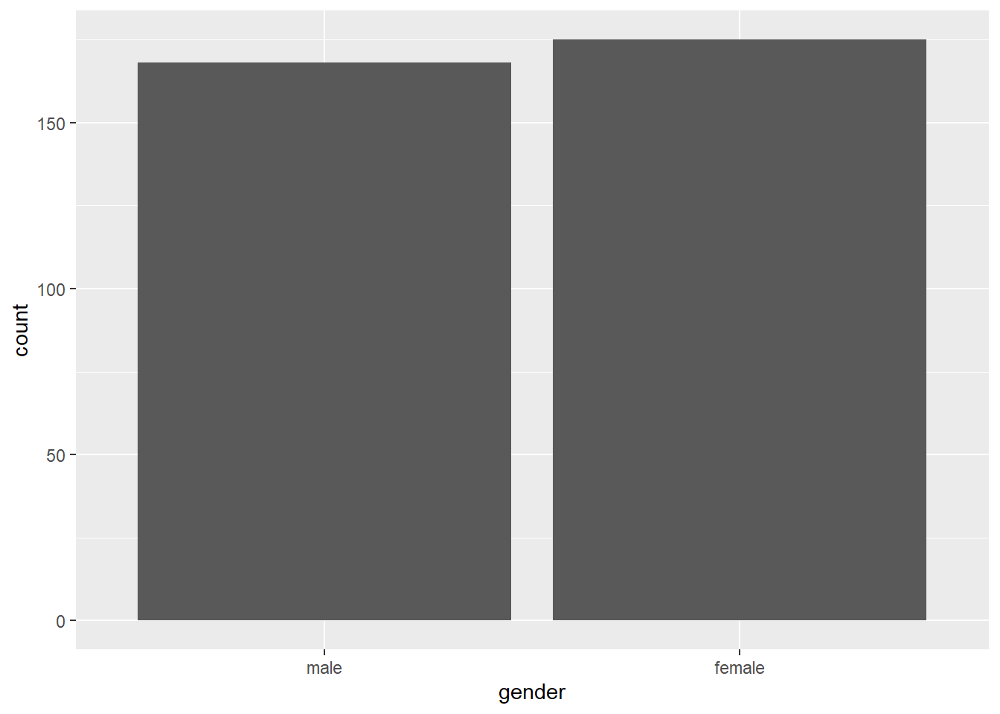
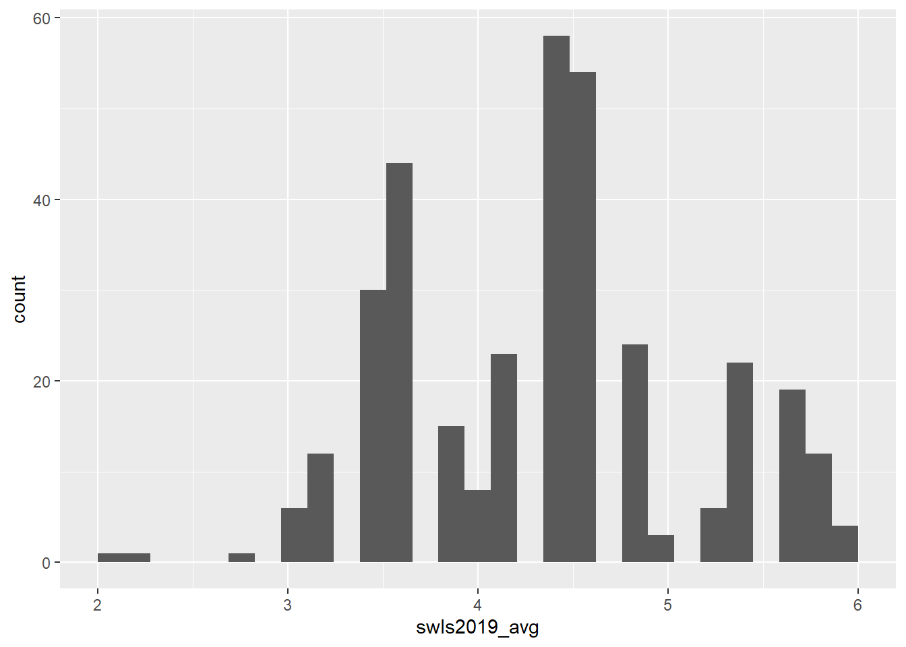
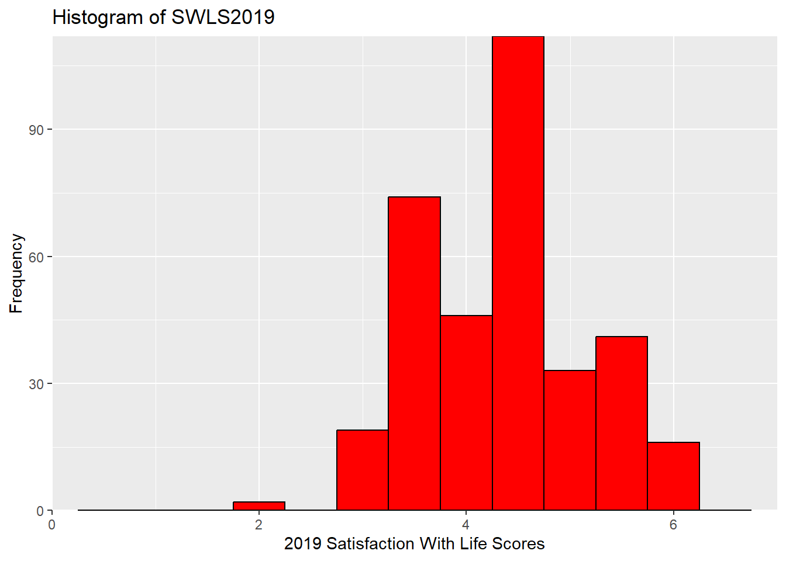
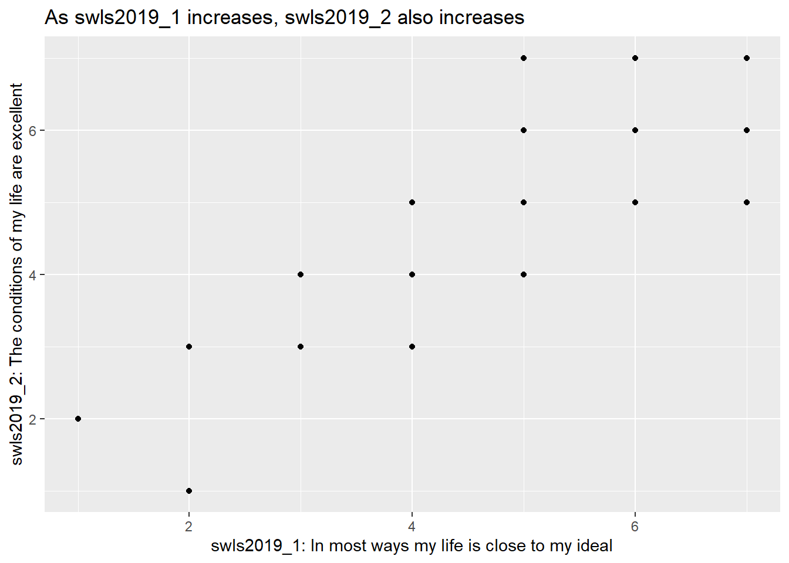

3 Using tidyverse
Warning: This is a pretty long tutorial. However, it covers commands that are useful for data cleaning / wrangling. These will not be covered in the class, so please do set aside the time to go through this on your own!
Now that you have some basics under your belt, let’s move on to installing and using packages from tidyverse!
The tidyverse is a collection of R packages that many data analysts use. You can think of packages as collections of R codes (and more!) that other people have created to make R more powerful or easier to use. In this course, we will be heavily relying on a few of the packages such as readr, dplyr and ggplot2 that are in the tidyverse collection. Instead of installing each package separately as we normally would, we can simply install tidyverse and that would install all the other packages that we want.
3.1 Installing and Loading tidyverse
To install tidyverse, use the function install.packages().
Even after we have installed tidyverse, we cannot use it unless we load it. To load it, we need the library() function.
Note. You can temporarily load a package without using the library() function using the notation package::function. This tells R to load the package for a specific chunk of code and not for the entire session. This allows anyone who reads the code to know which package the function comes from.
The package::function comes in especially handy when we want to help R distinguish between two packages with the same function names. For example, the packages ggplot2 and psych both have a function called alpha(). If you load both together, R will “mask” the function from one of the packages (it will tell you which package is masked when loading the packages). What this means is that R will use the function from the package that is not masked. As you can imagine, this can be quite confusing. So, to specify that you want to use the function from the psych package, you should type psych::alpha(). Similarly, if you want to specify that the function comes from the ggplot2 package, type ggplot2::alpha().
Now that we have tidyverse loaded, let’s do stuff with it. Let’s start with importing data.
3.2 Import Data
Usually, R users do not have to enter their data into R directly. Instead, they already have their dataset in various formats, such as .csv, .txt, .sav, .xlsx, etc. So what they need to do is to import the dataset into R.
In this class, I will use mainly .csv files. To import .csv files, we can use the read_csv() function from the readr package in tidyverse. I have created a hypothetical dataset to demonstrate how to import .csv files. To follow along, please download the dataset here: SWB.csv.
3.2.1 SWB Dataset
In this hypothetical dataset, 343 participants provided demographic information and responded to the 9-item Materialism Values Survey (MVS) and the 5-item Satisfaction with Life Scale in 2019 (SWLS2019). The same participants were asked to respond to the Satisfaction with Life Scale in 2021 (SWLS2021). The legend for this dataset is as follows:
| Variable Name | Variable Label | Value Label |
|---|---|---|
| pin | participant identification number | |
| gender | gender | 0 = male, 1 = female |
| marital_status | marital status | 1 = married, 2 = divorced, 3 = widowed |
| have_children | parental status | 0 = no children, 1 = have children |
| mvs_1 | My life would be better if I own certain things I don’t have. | 1 = strongly disagree, 2 = disagree, 3 = neither disagree nor agree, 4 = agree, 5 = strongly agree |
| mvs_2 | The things I own say a lot about how well I’m doing. | 1 = strongly disagree, 2 = disagree, 3 = neither disagree nor agree, 4 = agree, 5 = strongly agree |
| mvs_3 | I’d be happier if I could afford to buy more things. | 1 = strongly disagree, 2 = disagree, 3 = neither disagree nor agree, 4 = agree, 5 = strongly agree |
| mvs_4 | It bothers me that I can’t afford to buy things I’d like. | 1 = strongly disagree, 2 = disagree, 3 = neither disagree nor agree, 4 = agree, 5 = strongly agree |
| mvs_5 | Buying things gives me a lot of pleasure. | 1 = strongly disagree, 2 = disagree, 3 = neither disagree nor agree, 4 = agree, 5 = strongly agree |
| mvs_6 | I admire people who own expensive homes, cars, clothes. | 1 = strongly disagree, 2 = disagree, 3 = neither disagree nor agree, 4 = agree, 5 = strongly agree |
| mvs_7 | I like to own things that impress people. | 1 = strongly disagree, 2 = disagree, 3 = neither disagree nor agree, 4 = agree, 5 = strongly agree |
| mvs_8 | I like a lot of luxury in my life. | 1 = strongly disagree, 2 = disagree, 3 = neither disagree nor agree, 4 = agree, 5 = strongly agree |
| mvs_9 | I try to keep my life simple, as far as possessions are concerned. (R) | 1 = strongly disagree, 2 = disagree, 3 = neither disagree nor agree, 4 = agree, 5 = strongly agree |
| swls2019_1 | In most ways my life is close to my ideal. (2019) | 1 = strongly disagree, 2 = disagree, 3 = slightly disagree, 4 = neither disagree nor agree, 5 = slightly agree, 6 = agree, 7 = strongly agree |
| swls2019_2 | The conditions of my life are excellent. (2019) | 1 = strongly disagree, 2 = disagree, 3 = slightly disagree, 4 = neither disagree nor agree, 5 = slightly agree, 6 = agree, 7 = strongly agree |
| swls2019_3 | I am satisfied with my life. (2019) | 1 = strongly disagree, 2 = disagree, 3 = slightly disagree, 4 = neither disagree nor agree, 5 = slightly agree, 6 = agree, 7 = strongly agree |
| swls2019_4 | So far I have gotten the important things I want in life. (2019) | 1 = strongly disagree, 2 = disagree, 3 = slightly disagree, 4 = neither disagree nor agree, 5 = slightly agree, 6 = agree, 7 = strongly agree |
| swls2019_5 | In most ways my life is close to my ideal. (2019) | 1 = strongly disagree, 2 = disagree, 3 = slightly disagree, 4 = neither disagree nor agree, 5 = slightly agree, 6 = agree, 7 = strongly agree |
| swls2021_1 | In most ways my life is close to my ideal. (2021) | 1 = strongly disagree, 2 = disagree, 3 = slightly disagree, 4 = neither disagree nor agree, 5 = slightly agree, 6 = agree, 7 = strongly agree |
| swls2021_2 | The conditions of my life are excellent. (2021) | 1 = strongly disagree, 2 = disagree, 3 = slightly disagree, 4 = neither disagree nor agree, 5 = slightly agree, 6 = agree, 7 = strongly agree |
| swls2021_3 | I am satisfied with my life. (2021) | 1 = strongly disagree, 2 = disagree, 3 = slightly disagree, 4 = neither disagree nor agree, 5 = slightly agree, 6 = agree, 7 = strongly agree |
| swls2021_4 | So far I have gotten the important things I want in life. (2021) | 1 = strongly disagree, 2 = disagree, 3 = slightly disagree, 4 = neither disagree nor agree, 5 = slightly agree, 6 = agree, 7 = strongly agree |
| swls2021_5 | In most ways my life is close to my ideal. (2021) | 1 = strongly disagree, 2 = disagree, 3 = slightly disagree, 4 = neither disagree nor agree, 5 = slightly agree, 6 = agree, 7 = strongly agree |
Now that you have some idea of what the dataset comprises, let’s read in the .csv file.
data <- read_csv("SWB.csv")
# this code is saying...
# read in the .csv file, "SWB.csv" and assign it to the object "data"
# from now on, "data" will refer to the data in this csv fileread_csv() is not the only function you can use to read in a .csv file. You can also use the built-in R function read.csv().
If you use read.csv(), you don’t have to load tidyverse. This is because read_csv() comes from the readr package (and therefore the tidyverse collection) whereas read.csv() comes pre-installed with R.
read.csv() is supposedly slower than read_csv(), which in turn is slower than data.table’s fread(). For our purposes, though, it really doesn’t matter which you use, so long as you can successfully read the .csv file.
If you have other file types, such as .txt, .sav, .xlsx, you might need different packages. For example, for excel files (.xlsx), you will need the readxl package. For SPSS (.sav), you will need the haven package or the foreign package. For this class, I am very unlikely to use file types aside from .csv, but it is good to be aware of the packages to use if you want to import other file types.
3.2.2 Check Imported Dataset
Before conducting any analyses, check that the dataset has been imported correctly. Go to the Environment pane (top right pane of RStudio). Click on data. The top left pane should now show the imported data in what looks like a spreadsheet. Alternatively, you may type View(data) into the console.
- Rows: The data for each participant is recorded in a single row (e.g., data for Participant 1 is in Row 1)
- Columns: The data for each variable is recorded in a single column. Names of the variables are in the headers for each column
Scroll down to ensure all rows have been imported correctly. There should be 343 rows. Scroll right to ensure all columns have been imported correctly. There should be 23 columns.
Another way to check the imported dataset is using the str() or the glimpse() functions. Both give you roughly similar information (e.g., that there are 343 rows and 23 columns, the names of the variables, the values for the first 10 or so participants). Compare them below.
## spc_tbl_ [343 × 23] (S3: spec_tbl_df/tbl_df/tbl/data.frame)
## $ pin : num [1:343] 1 2 3 4 5 6 7 8 9 10 ...
## $ gender : num [1:343] 0 1 1 1 1 0 1 0 1 0 ...
## $ marital_status: num [1:343] 1 1 3 1 2 1 2 1 2 1 ...
## $ have_children : num [1:343] 0 1 0 0 0 1 0 0 0 1 ...
## $ mvs_1 : num [1:343] 4 4 5 2 2 3 2 2 3 2 ...
## $ mvs_2 : num [1:343] 3 3 4 3 2 4 3 3 4 3 ...
## $ mvs_3 : num [1:343] 3 3 4 3 3 4 3 3 4 3 ...
## $ mvs_4 : num [1:343] 3 3 3 2 2 5 4 4 3 4 ...
## $ mvs_5 : num [1:343] 3 3 4 3 3 4 3 3 4 2 ...
## $ mvs_6 : num [1:343] 4 4 5 2 2 3 4 4 5 2 ...
## $ mvs_7 : num [1:343] 3 2 4 2 3 3 3 3 4 3 ...
## $ mvs_8 : num [1:343] 4 4 5 4 4 5 3 3 4 3 ...
## $ mvs_9 : num [1:343] 2 2 1 3 3 2 3 3 2 4 ...
## $ swls2019_1 : num [1:343] 4 5 4 6 5 5 2 4 5 5 ...
## $ swls2019_2 : num [1:343] 4 6 4 5 4 4 3 3 5 5 ...
## $ swls2019_3 : num [1:343] 5 5 4 7 4 4 3 3 5 5 ...
## $ swls2019_4 : num [1:343] 5 6 5 6 4 5 3 3 4 6 ...
## $ swls2019_5 : num [1:343] 4 6 5 5 5 4 3 3 5 6 ...
## $ swls2021_1 : num [1:343] 4 4 3 5 4 5 2 4 4 5 ...
## $ swls2021_2 : num [1:343] 4 6 3 5 3 4 2 3 4 5 ...
## $ swls2021_3 : num [1:343] 5 4 4 6 4 3 4 3 5 4 ...
## $ swls2021_4 : num [1:343] 5 5 5 6 4 4 3 3 4 5 ...
## $ swls2021_5 : num [1:343] 4 5 5 5 5 4 3 3 5 6 ...
## - attr(*, "spec")=
## .. cols(
## .. pin = col_double(),
## .. gender = col_double(),
## .. marital_status = col_double(),
## .. have_children = col_double(),
## .. mvs_1 = col_double(),
## .. mvs_2 = col_double(),
## .. mvs_3 = col_double(),
## .. mvs_4 = col_double(),
## .. mvs_5 = col_double(),
## .. mvs_6 = col_double(),
## .. mvs_7 = col_double(),
## .. mvs_8 = col_double(),
## .. mvs_9 = col_double(),
## .. swls2019_1 = col_double(),
## .. swls2019_2 = col_double(),
## .. swls2019_3 = col_double(),
## .. swls2019_4 = col_double(),
## .. swls2019_5 = col_double(),
## .. swls2021_1 = col_double(),
## .. swls2021_2 = col_double(),
## .. swls2021_3 = col_double(),
## .. swls2021_4 = col_double(),
## .. swls2021_5 = col_double()
## .. )
## - attr(*, "problems")=<externalptr>## Rows: 343
## Columns: 23
## $ pin <dbl> 1, 2, 3, 4, 5, 6, 7, 8, 9, 10, 11, 12, 13, 14, 15, 16, …
## $ gender <dbl> 0, 1, 1, 1, 1, 0, 1, 0, 1, 0, 0, 1, 1, 0, 0, 1, 0, 0, 0…
## $ marital_status <dbl> 1, 1, 3, 1, 2, 1, 2, 1, 2, 1, 3, 2, 3, 3, 3, 1, 1, 1, 3…
## $ have_children <dbl> 0, 1, 0, 0, 0, 1, 0, 0, 0, 1, 0, 0, 0, 0, 1, 1, 1, 1, 0…
## $ mvs_1 <dbl> 4, 4, 5, 2, 2, 3, 2, 2, 3, 2, 2, 3, 2, 2, 3, 3, 3, 4, 3…
## $ mvs_2 <dbl> 3, 3, 4, 3, 2, 4, 3, 3, 4, 3, 2, 4, 1, 3, 2, 3, 2, 4, 3…
## $ mvs_3 <dbl> 3, 3, 4, 3, 3, 4, 3, 3, 4, 3, 3, 4, 2, 2, 3, 4, 4, 5, 3…
## $ mvs_4 <dbl> 3, 3, 3, 2, 2, 5, 4, 4, 3, 4, 4, 4, 2, 2, 4, 3, 3, 4, 4…
## $ mvs_5 <dbl> 3, 3, 4, 3, 3, 4, 3, 3, 4, 2, 2, 3, 3, 3, 4, 4, 4, 5, 3…
## $ mvs_6 <dbl> 4, 4, 5, 2, 2, 3, 4, 4, 5, 2, 2, 3, 3, 3, 4, 2, 2, 3, 4…
## $ mvs_7 <dbl> 3, 2, 4, 2, 3, 3, 3, 3, 4, 3, 1, 4, 4, 1, 5, 1, 3, 2, 3…
## $ mvs_8 <dbl> 4, 4, 5, 4, 4, 5, 3, 3, 4, 3, 3, 4, 2, 2, 3, 3, 3, 4, 4…
## $ mvs_9 <dbl> 2, 2, 1, 3, 3, 2, 3, 3, 2, 4, 4, 3, 4, 4, 3, 3, 3, 2, 3…
## $ swls2019_1 <dbl> 4, 5, 4, 6, 5, 5, 2, 4, 5, 5, 5, 3, 4, 5, 4, 5, 5, 6, 4…
## $ swls2019_2 <dbl> 4, 6, 4, 5, 4, 4, 3, 3, 5, 5, 5, 4, 3, 5, 4, 4, 4, 6, 5…
## $ swls2019_3 <dbl> 5, 5, 4, 7, 4, 4, 3, 3, 5, 5, 4, 4, 3, 4, 3, 4, 4, 5, 4…
## $ swls2019_4 <dbl> 5, 6, 5, 6, 4, 5, 3, 3, 4, 6, 4, 4, 4, 5, 4, 4, 5, 6, 4…
## $ swls2019_5 <dbl> 4, 6, 5, 5, 5, 4, 3, 3, 5, 6, 5, 4, 3, 4, 3, 5, 5, 6, 4…
## $ swls2021_1 <dbl> 4, 4, 3, 5, 4, 5, 2, 4, 4, 5, 5, 2, 3, 5, 4, 4, 5, 6, 4…
## $ swls2021_2 <dbl> 4, 6, 3, 5, 3, 4, 2, 3, 4, 5, 4, 3, 2, 4, 3, 4, 4, 6, 4…
## $ swls2021_3 <dbl> 5, 4, 4, 6, 4, 3, 4, 3, 5, 4, 4, 4, 3, 4, 2, 3, 3, 4, 4…
## $ swls2021_4 <dbl> 5, 5, 5, 6, 4, 4, 3, 3, 4, 5, 4, 4, 4, 5, 3, 3, 4, 5, 4…
## $ swls2021_5 <dbl> 4, 5, 5, 5, 5, 4, 3, 3, 5, 6, 5, 4, 3, 4, 3, 4, 5, 6, 4…3.3 Factors
When you look at the output from str(data) or glimpse(data), you can see that some values don’t seem to make sense on their own. For example, what do 0 and 1 in gender mean? From the legend table earlier, we can see that 0 stands for male and 1 stands for female. But having to consult the table every time we do an analysis is tiresome and also error-prone. So, we use the factor() command to tell R what those values mean for categorical variables.
data$gender <- factor(data$gender,
levels = c(0, 1),
labels = c("male", "female"))
# this code is saying...
# we want to convert the variable gender into a factor
# this variable has two values / levels, 0 and 1
# label 0 as “male” and 1 as “female”
# notice that male and female are enclosed in quotation marks (because they are non-numerical or string variables).
# Check that gender is now a factor with either glimpse() or str()
# They'll give you the same output
glimpse(data$gender)## Factor w/ 2 levels "male","female": 1 2 2 2 2 1 2 1 2 1 ...3.4 Data Wrangling With dplyr
What should we do after importing a dataset? Well, there are many things we can do! We might want to, say, select specific columns to analyse. Or we might want to select only participants who completed all the questions in the survey. Or we might want to create new variables from existing ones. Or we might want to get some descriptive statistics like mean and standard deviation. All of that is made possible with functions in the dplyr package in tidyverse.
Some of the functions I’ve found useful in the dplyr package are:
| dplyr functions | Description |
|---|---|
| select() | select specific columns |
| filter() | filter (keep, select) specific rows |
| mutate() | create new variables / columns |
| summarise() | summarise values in form of summary statistics |
| group_by() | apply operations to different groups |
There are more functions in the dplyr package! Check out the dplyr cheat sheet here: https://www.rstudio.com/wp-content/uploads/2015/02/data-wrangling-cheatsheet.pdf.
When you go through the code below, you’ll notice that in dplyr (and also tidyverse in general), the pipe operator %>% is used a lot. You can think of it as a symbol for “then”. For example X %>% Y would be read as: Do X then take the result from that to do Y. Because it gets tiring to type the pipe operator so frequently, there’s a shortcut for it: Ctrl/Cmd + Shift + M. (You may see the pipe operator written as |> but this is a new development as of 2023 and most users still use %>% as their default pipe operator.)
With that out of the way… Let’s go through the five functions!
3.4.1 Select()
The select() function allows us to select specific columns. This is especially useful if we have many columns to work with and we only want to focus on a few.
Let’s say we only want to select gender and the swls2019_1 to swls2019_5 columns in the SWB dataset. Here’s how we would do it:
swls2019_only <- data %>% # create the subset called "swls2019_only" from "data", and then
select(gender, swls2019_1:swls2019_5) # select gender and the columns swls2019_1 to swls2019_5This is what the first six rows of swls2019_only look like:
## # A tibble: 6 × 6
## gender swls2019_1 swls2019_2 swls2019_3 swls2019_4 swls2019_5
## <fct> <dbl> <dbl> <dbl> <dbl> <dbl>
## 1 male 4 4 5 5 4
## 2 female 5 6 5 6 6
## 3 female 4 4 4 5 5
## 4 female 6 5 7 6 5
## 5 female 5 4 4 4 5
## 6 male 5 4 4 5 4I sometimes also use select() to re-arrange the order of the columns. (In dplyr, the “correct” function to re-arrange the order of the columns is arrange(). arrange() allows us to re-arrange rows in addition to columns. But select() works too!)
So, let’s say we want the swls2019_1 to swls2019_5 columns to come before gender. We simply list the swls2019_1 to swls2019_5 columns before gender.
This is what the first six rows of swls2019_genderlast look like:
## # A tibble: 6 × 6
## swls2019_1 swls2019_2 swls2019_3 swls2019_4 swls2019_5 gender
## <dbl> <dbl> <dbl> <dbl> <dbl> <fct>
## 1 4 4 5 5 4 male
## 2 5 6 5 6 6 female
## 3 4 4 4 5 5 female
## 4 6 5 7 6 5 female
## 5 5 4 4 4 5 female
## 6 5 4 4 5 4 male3.4.2 Filter()
Maybe we don’t want to select specific columns. Instead, we want to select specific kinds of participants to conduct our analyses on (e.g., say from specific treatment groups or maybe only male participants). In other words, we want to select specific rows. We use filter() to do that.
New R users sometimes confuse select() with filter(). Here’s how to differentiate the two: select() is used to select columns (i.e., variables) whereas filter() is used to select rows (i.e., participants).
So, let’s say we want to select only male participants.
male_only <- data %>% # create "male_only" subset from "data", and then
filter(gender == "male") # filter (keep) only male participantsNotice that the double equal sign == is used here. In programming languages, the == sign is used when we are comparing the left and the right hand side. Here, we’re comparing each row of the column gender to the word “male”. If that row matches the word “male”, we will filter (keep) that row. Otherwise, we will toss it out.
This is what the first six rows of male_only look like:
## # A tibble: 6 × 23
## pin gender marital_status have_children mvs_1 mvs_2 mvs_3 mvs_4 mvs_5 mvs_6
## <dbl> <fct> <dbl> <dbl> <dbl> <dbl> <dbl> <dbl> <dbl> <dbl>
## 1 1 male 1 0 4 3 3 3 3 4
## 2 6 male 1 1 3 4 4 5 4 3
## 3 8 male 1 0 2 3 3 4 3 4
## 4 10 male 1 1 2 3 3 4 2 2
## 5 11 male 3 0 2 2 3 4 2 2
## 6 14 male 3 0 2 3 2 2 3 3
## # ℹ 13 more variables: mvs_7 <dbl>, mvs_8 <dbl>, mvs_9 <dbl>, swls2019_1 <dbl>,
## # swls2019_2 <dbl>, swls2019_3 <dbl>, swls2019_4 <dbl>, swls2019_5 <dbl>,
## # swls2021_1 <dbl>, swls2021_2 <dbl>, swls2021_3 <dbl>, swls2021_4 <dbl>,
## # swls2021_5 <dbl>3.4.3 Mutate()
Sometimes, we might want to create new variables, say averages or totals. We can do this with mutate().
Let’s say we want to find the average of swls2019_1 to swls2019_5 for each participant. We will use the subset we created just now, swls2019_only to do this.
swls2019_only <- swls2019_only %>%
mutate(swls2019_avg = (swls2019_1 + swls2019_2 + swls2019_3 + swls2019_4 + swls2019_5) / 5)
# this code is saying...
# create a variable called `swls2019_avg` by adding up swls2019_1 to swls2019_5 and then dividing the total by 5
# add this variable to the data frame swls2019_onlyThe first 6 rows of swls2019_only now looks like this:
## # A tibble: 6 × 7
## gender swls2019_1 swls2019_2 swls2019_3 swls2019_4 swls2019_5 swls2019_avg
## <fct> <dbl> <dbl> <dbl> <dbl> <dbl> <dbl>
## 1 male 4 4 5 5 4 4.4
## 2 female 5 6 5 6 6 5.6
## 3 female 4 4 4 5 5 4.4
## 4 female 6 5 7 6 5 5.8
## 5 female 5 4 4 4 5 4.4
## 6 male 5 4 4 5 4 4.4Notice that the swls2019_avg is now appended as the last column.
You can achieve the same results using rowMeans().
swls2019_only <- swls2019_only %>%
mutate(swls2019_avg_rowmeans = rowMeans(across(c(swls2019_1:swls2019_5))))
# rowMeans(across(c(swls2019_1:swls2019_5))) tells R that we want to find the mean (average) for each row (hence rowMeans) across the set of five variables, swls2019_1 to swls2019_5. Let’s compare swls2019_avg and swls2019_avg_rowmeans for the first 6 rows:
## # A tibble: 6 × 2
## swls2019_avg swls2019_avg_rowmeans
## <dbl> <dbl>
## 1 4.4 4.4
## 2 5.6 5.6
## 3 4.4 4.4
## 4 5.8 5.8
## 5 4.4 4.4
## 6 4.4 4.4You should notice that the two columns give you the exact same results.
3.4.4 Summarise()
The summarise() function is used when we want to get summary statistics such as the mean, median, maximum, minimum, etc for a given column in the data frame.
Let’s say we’re interested to know the mean (avg_swls), minimum (min_swls), maximum (max_swls), variance (var_swls), standard deviation (sd_swls), total number of participants (total) for swls2019_avg. Again, we will use our swls2019_only subset.
swls2019_only %>%
summarise(avg_swls = mean(swls2019_avg),
min_swls = min(swls2019_avg),
max_swls = max(swls2019_avg),
var_swls = var(swls2019_avg),
sd_swls = sd(swls2019_avg),
total = n())## # A tibble: 1 × 6
## avg_swls min_swls max_swls var_swls sd_swls total
## <dbl> <dbl> <dbl> <dbl> <dbl> <int>
## 1 4.35 2 6 0.588 0.767 343To be honest, though, I think it might be more convenient to get these summary statistics using the describe() function from the psych() package.
## Warning: package 'psych' was built under R version 4.3.1## vars n mean sd median trimmed mad min max range skew kurtosis se
## X1 1 343 4.35 0.77 4.4 4.33 0.89 2 6 4 0.1 -0.48 0.043.4.5 Group_by()
Sometimes, we might want to apply the same function to different groups of people. For example, we might want to know what the maximum swls score is for males and for females separately. We can use the group_by() function to do this.
Let’s say we’re interested to know the mean (avg_swls), minimum (min_swls), maximum (max_swls), variance (var_swls), standard deviation (sd_swls), total number of participants (total) for swls2019_avg for males and females separately.
swls2019_only %>%
group_by(gender) %>%
summarise(avg_swls = mean(swls2019_avg),
min_swls = min(swls2019_avg),
max_swls = max(swls2019_avg),
var_swls = var(swls2019_avg),
sd_swls = sd(swls2019_avg),
total = n())## # A tibble: 2 × 7
## gender avg_swls min_swls max_swls var_swls sd_swls total
## <fct> <dbl> <dbl> <dbl> <dbl> <dbl> <int>
## 1 male 4.08 3 5.8 0.373 0.611 168
## 2 female 4.62 2 6 0.657 0.810 175Again, I think that the describeBy() function from the psych package would be much more convenient here.
##
## Descriptive statistics by group
## group: male
## vars n mean sd median trimmed mad min max range skew kurtosis se
## X1 1 168 4.08 0.61 4.2 4.06 0.59 3 5.8 2.8 0.26 -0.46 0.05
## ------------------------------------------------------------
## group: female
## vars n mean sd median trimmed mad min max range skew kurtosis se
## X1 1 175 4.62 0.81 4.6 4.65 0.89 2 6 4 -0.35 -0.25 0.06I’ve shown in some examples above that we can combine different dplyr functions such as group_by() and summarise() to achieve specific results. I encourage you to play around with the combinations to see what results they lead to!
3.5 Tables and Plots with ggplot2
Okay, so what else can we do with the data? Well, we can create tables and graphs! But why might we do this? Well… Tables and graphs provide us a way to visualize the data. They show us the distribution of the data and allow us to discover any errors or interesting patterns.
Let’s start with the frequency (distribution) tables.
3.5.1 Frequency Tables
A frequency (distribution) table tells us the number of times each data value occurs for a given variable.
Let’s say we want to know how many males and how many females participated in the study using the swls2019_only subset. The variable is gender and the data values we are interested in are male and female. Let’s find out!
Before looking at my code below, try coming up with your own! (HINT: Use the summarise() function!)
swls2019_only %>%
group_by(gender) %>% # Group the result by gender
summarise(freq = n()) # Count how many of each value in the data## # A tibble: 2 × 2
## gender freq
## <fct> <int>
## 1 male 168
## 2 female 175The output tells us 168 males and 175 females participated in the study.
The number of times a data value occurs for a given variable is called the absolute frequency. If we want the relative frequency (i.e., the number of times a data value occurs relative to the total number of observations for a given variable), then we divide the absolute frequency by the total number of values.
Again, try this on your own before looking at my code. (HINT: Use the summarise() function and then the mutate() function!)
swls2019_only %>%
group_by(gender) %>% # Group the result by gender
summarise(freq = n()) %>% # Count how many of each value in the data
mutate (total = sum(freq), # Count the total number of observations
rel_freq = freq / total) # Take the frequency of each value / total number of observations## # A tibble: 2 × 4
## gender freq total rel_freq
## <fct> <int> <int> <dbl>
## 1 male 168 343 0.490
## 2 female 175 343 0.510The output (rel_freq) tells us that slightly less than half the sample are males (0.49) and slightly more than half are females (0.51).
Relative frequency is a proportion and may be difficult for some people to interpret. For easier interpretation, we can convert the proportions into percentages by taking 100%.
Try converting the proportions into percentages on your own before looking at my code below!
swls2019_only %>%
group_by(gender) %>%
summarise(freq = n()) %>%
mutate (total = sum(freq),
rel_freq = freq / total,
percentage = rel_freq * 100) ## # A tibble: 2 × 5
## gender freq total rel_freq percentage
## <fct> <int> <int> <dbl> <dbl>
## 1 male 168 343 0.490 49.0
## 2 female 175 343 0.510 51.03.5.2 Bar Plots with ggplot2
Instead of using a frequency table, maybe you want a bar chart or bar plot to visually represent the frequency distribution instead. (Note that bar charts or bar plots are used for categorical variables only.)
We will use ggplot2, a package developed for data visualization, which is part of the tidyverse collection. Every plot in ggplot2 is plotted with three components: data, aesthetics, and geometry.
- Data: specifies the data frame
- Aesthetics: specifies the variables that we want to plot as well as aesthetics, like colour
- Geometry: specifies the type of plot & other modifications
These three components apply when we make any plot in ggplot2. Let’s make a bar chart with ggplot2 with the code below.
ggplot(data = swls2019_only, aes(x = gender)) + # dataset used is swls2019_only, x (horizontal axis) is gender
geom_bar(stat = "count") # we want a bar plot where the statistic is the count of the values in x 
Here’s an alternative that will give you the exact same output.
# Alternative
swls2019_only %>% # dataset used is swls2019_only
ggplot(.) + # R takes swls2019_only in the previous line and places it in the . on this line to tell ggplot that dataset used is swls2019_only
geom_bar(aes(x = gender), stat="count") # we want a bar plot where x (horizontal axis) is gender and the statistic is the count of values in xNotice that the aes() command can be either in the ggplot line or the geom function line. In this case, where you type it doesn’t affect the results at all. (Try this out yourself to confirm!)
I personally prefer the alternative because it’s easier for me to read, but it doesn’t matter to me which you use so long as it works!
3.5.3 Histograms with ggplot2
We create bar plots for categorical variables (such as gender). For continuous variables which can take on infinite values (such as time), we create histograms.
A histogram is a visual representation of the frequency table for a given continuous variable (i.e., it shows us the frequency distribution, or the frequency of scores for a given continuous variable).
Let’s use ggplot2 to make a histogram for swls2019_avg with a very basic code.
ggplot(data = swls2019_only, aes(x = swls2019_avg)) +
geom_histogram() # we want a histogram, so geom_histogram() is used## `stat_bin()` using `bins = 30`. Pick better value with `binwidth`.
As with the bar chart, you could do this instead and the results would be the same:
Now, the histogram that you got is okay, but kinda basic… Maybe you want to customise it. For example, you might want to add a specific label for the y-axis or the x-axis… Or maybe you want to change the colour of the graph! You can customise all of that! Here are some ideas.
# Assign color “red” to the object barfill (which we will use below to change the colour of the bars).
barfill <- "red"
# Assign color “black” to the object barlines (which we will use below to change the colour of the barlines).
barlines <- "black"
# Specify the data frame and the variables to plot
ggplot(swls2019_only, aes(x = swls2019_avg)) +
# Specify the type of plot and binwidth
geom_histogram(binwidth = 0.5,
# Specify the border of the bars
color = barlines,
# Specify the color of the bar
fill = barfill) +
# Label the x-axis
scale_x_continuous(name = "2019 Satisfaction With Life Scores",
# Force the graph to start at x = 0
expand = c(0, 0),
# Force the graph to end at x = 7
limits = c(0, 7)) +
# Label the y-axis
scale_y_continuous(name = "Frequency",
# Force the graph to start at y = 0
expand = c(0, 0),
# No maximum limit to y (hence, NA)
limits = c(NA, NA)) +
# Give the histogram a title.
ggtitle("Histogram of SWLS2019")## Warning: Removed 2 rows containing missing values (`geom_bar()`).
Note that when you set limits on the graph, it throws up a warning: Warning: Removed 2 rows containing missing values (geom_bar()). This is a known issue, but is apparently too complex to resolve (see: https://github.com/tidyverse/ggplot2/issues/4083). You may safely ignore it if your limits are beyond the minimum and maximum values of your axes. For example, suppose your minimum value for the x-axis is 1 and your maximum value is 7. If you set the limits to 0 and 8, it should comprise all values in your dataset. You can find the minimum and maximum values using the summarise() function, or simply use max() or min().
3.5.4 Scatterplot with ggplot2
So far, we’ve been focusing on single variables (e.g., gender and swls2019_avg). What if we’re interested in the relationship between two continuous variables? Here is where we might want to plot a scatterplot!
A scatterplot is a graph of pairs of values for each subject or individual. Specifically, each individual provides two observations, one for each variable. One of the variables will be plotted along the x-axis and the other along the y-axis.
So, suppose we’re interested in plotting the relationship between two items from the SWLS2019 dataset: swls2019_1 and swls2019_2. Why might we be interested in this? Well, the reasoning goes something like this: Both items supposedly measure satisfaction with life. So, if a participant scores higher on one item than another participant, they should also score higher on the other item. To confirm this, we can plot a scatterplot.
Here’s the basic code for a scatterplot in ggplot2:
swls2019_only %>%
ggplot(.) +
geom_point(aes(x = swls2019_1, y = swls2019_2)) + # A scatterplot is a plot of points on a graph. So we use geom_point.
labs(x = "swls2019_1: In most ways my life is close to my ideal",
y = "swls2019_2: The conditions of my life are excellent",
title = "As swls2019_1 increases, swls2019_2 also increases") # labs() is another way to add labels. You can also add a title using the labs() function, which by default is left-aligned. 
From the scatterplot, we see that indeed, as swls2019_1 increases, swls2019_2 increases.
Like the histogram, there are many different customisations beyond the basics I’ve shown you here. You can refer to this website for more: https://t-redactyl.io/blog/2016/02/creating-plots-in-r-using-ggplot2-part-5-scatterplots.html.
3.5.5 Last Words
I’ve only just scratched the surface of plots in this tutorial. For more, visit here: https://t-redactyl.io/tag/r-graphing-tutorials.html. Or here: https://r4ds.had.co.nz/data-visualisation.html. And here’s a link to the ggplot2 cheatsheet: https://posit.co/wp-content/uploads/2022/10/data-visualization-1.pdf.
Now that you’ve gotten to this point, I think you’re ready to do the next exercise! Proceed to the next section!